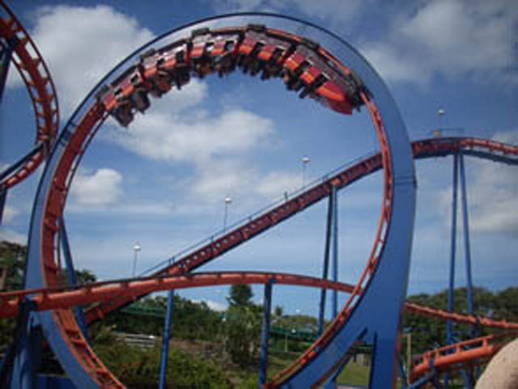
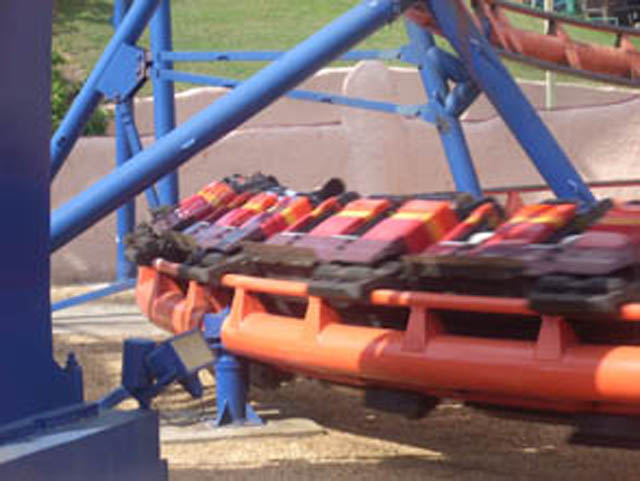

| |

Scorpion Review

We're here at Busch Gardens Tampa. For this review, we're going to have to go back in time to November 2007 when I rode this ride. For we're reviewing Scorpion, which no longer exists After we got in the trains and pulled down the lap bars, we're off! We then climbed up the lifthill. When we looked to our right, we then saw the loop and got excited as we got to go upsidedown without OTSRs today. Once we crested the top of the lifthill, we then got through a small turn before falling into the twisted drop. The drop was fun as we were leaning to the right, but we were still gaining quite a bit of speed for a ride of this size. After the drop, we roared straight up into a loop. The loop was pretty powerful and managed to bring a smile to our face. After roaring through that loop, we then headed straight into a banked turn before we twisted up into another hill. We turned a little, but then we fell back down into another twisted drop. This time, while we're falling, we got a nice view of Shiekra. Once we were done with that drop, we slammed into a turn and rose up into a small hill. While on this hill, we threaded the loop, which was pretty cool, but not OMFG amazing. Then we then headed straight into a double helix. This was pretty fun as we were gaining speed throughout the ride and getting faster as we went. Once we got out of the helix, we then headed straight for the brake run. While this was a fun ride and all, it's nothing compared to the B&Ms in the park. But no worries. It was a fun little Schwarzkoph, which are sadly becoming more and more rare. There is one clone of Scorpion still running. At some random park in Croatia. This is not a priority for me at all, but if I find myself in Croatia for whatever reason (it does seem like a nice country. But considering a clone of Scorpion is their best coaster, it's not a priority), I'll be sure to hop on.
6/10
Location: Busch Gardens Tampa
Opened: 1980
Built by: Schwarzkopf
Last Ridden: November 19, 2007
Scorpion Photos


Home
|